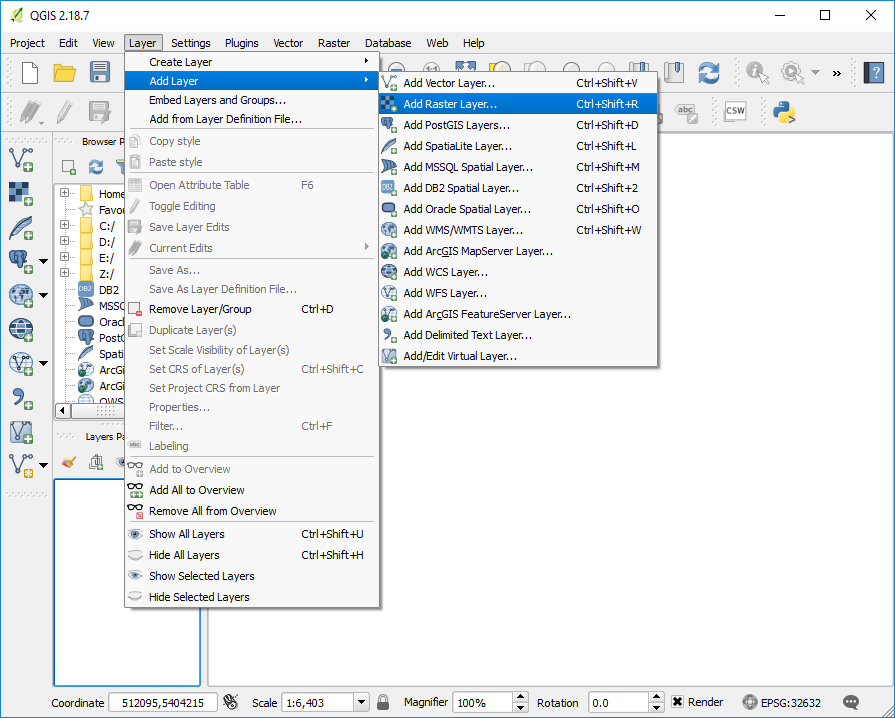
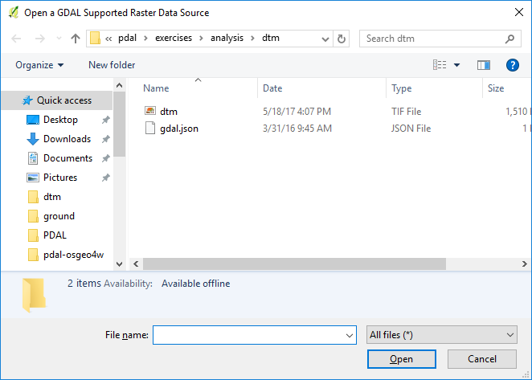

Generating a DTM¶
This exercise uses PDAL to generate an elevation model surface using the output from the Identifying ground exercise, PDAL’s writers.gdal operation, and GDAL to generate an elevation and hillshade surface from point cloud data.
Exercise¶
Note
The primary input for Digital Terrain Model generation is a point cloud
with ground classifications. We created this file, called
denoised-ground-only.laz, in the Identifying ground exercise. Please produce that
file by following that exercise before starting this one.
Command¶
Invoke the following command, substituting accordingly, in your Anaconda Shell:
PDAL capability to generate rasterized output is provided by the writers.gdal stage. There is no application to drive this stage, and we must use a pipeline.
Pipeline breakdown¶
{
"pipeline": [
"c:/Users/hobu/PDAL/exercises/analysis/ground/denoised-ground-only.laz",
{
"filename":"c:/Users/hobu/PDAL/exercises/analysis/dtm/dtm.tif",
"gdaldriver":"GTiff",
"output_type":"all",
"resolution":"2.0",
"type": "writers.gdal"
}
]
}
Note
This pipeline is available in your workshop materials in the
./exercises/analysis/dtm/dtm.json file. Make sure to edit the
filenames to match your paths.
1. Reader¶
denoised-ground-only is the LASzip file we will clip. You should have
created this output as part of the Identifying ground exercise.
2. writers.gdal¶
The writers.gdal writer that bins the point cloud data into an elevation surface.
{kind=link}
Visualization¶
Something happened, and some files were written, but we cannot really see what was produced. Let us use QGIS to visualize the output.
Open QGIS and Add Raster Layer:
Add the dtm.tif file from your
./PDAL/exercises/analysis/dtmdirectory.Classify the DTM by right-clicking on the dtm.tif and choosing Properties. Pick the pseudocolor rendering type, and then choose a color ramp and click Classify.

QGIS provides access to GDAL processing tools, and we are going to use that to create a hillshade of our surface. Choose Raster–>Analysis–>Dem:

Click the window for the Output file and select a location to save the
hillshade.tiffile.
1 2 3 4
gdaldem hillshade ^ C:/Users/hobu/pdal/exercises/analysis/dtm/dtm.tif ^ C:/Users/hobu/pdal/exercises/analysis/dtm/hillshade.tif ^ -z 1.0 -s 1.0 -az 315.0 -alt 45.0 -of GTiff
Click OK and the hillshade of your DTM is now available
{kind=link}
{kind=link}
{kind=link}
{kind=link}
{kind=link}
Notes¶
- gdaldem, which powers the QGIS DEM tools, is a very powerful command line utility you can use for processing data.
- writers.gdal can be used for large data, but it does not interpolate a typical TIN surface model.